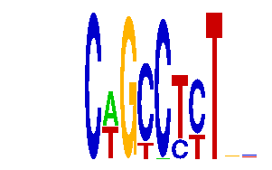

family_11 |
|---|
|  |
| Download PWM |
| Download instances (motifs) |
| Show motif distribution |
Query_ID | Query_Consensus | Subject_Name | Source_DB | Subject_ID | Length | Orientation | Offset | Divergence | Overlap | Subject_Consensus |
|---|
Sequence | Start_position (from start) | Start_position (from end) | Average conservation | Best conservation score | Instance_with_best_CS | Best_Z-score | Instance_with_best_ZS | Strand |
|---|---|---|---|---|---|---|---|---|
| chr6:112409315-112410315 | 896 | 908 | 0.0131667 | 0.096 | AGCAGCMTYT.. | 12.672812 | AGCAGCMTYT.. | 1 |
| chr7:142796562-142797562 | 805 | 817 | 0.14125 | 0.326 | ..CWGYCTCT.. | 12.185403 | ..CWGCCTYT.. | -1 |
| chr1:191598503-191599503 | 368 | 380 | 0.00941667 | 0.02 | ..CWGCCTYT.. | 12.185403 | ..CWGCCTYT.. | 1 |
| chr2:35115003-35116003 | 430 | 442 | 0.0274167 | 0.085 | ..CWGCCYCT.. | 12.979646 | ..CWGYCTCT.. | 1 |
| chr3:101890560-101891560 | 44 | 56 | 0.688083 | 1 | ..CWGCCTYT.. | 12.292535 | ..CAGCCYYT.. | 1 |
| chr12:104575751-104576751 | 245 | 257 | 0.00166667 | 0.005 | ..CAGCCYYT.. | 12.292535 | ..CAGCCYYT.. | 1 |
| chr19:36203497-36204497 | 803 | 815 | 0.0005 | 0.003 | ..CWGCCTYT.. | 12.185403 | ..CWGCCTYT.. | 1 |
| chr6:71211630-71212630 | 511 | 523 | 0.999917 | 1 | ..CWGCCTYT.. | 12.185403 | ..CWGCCTYT.. | 1 |
| chr17:71370087-71371087 | 686 | 698 | 0.0299167 | 0.068 | ..CWGCCTYT.. | 12.185403 | ..CWGCCTYT.. | 1 |
| chr2:78927083-78928083 | 431 | 443 | 0.000416667 | 0.001 | ..CAGCCYYT.. | 12.292535 | ..CAGCCYYT.. | -1 |
| chr2:84474956-84475956 | 256 | 268 | 0.999333 | 1 | ..CWGYCTCT.. | 12.185403 | ..CWGCCTYT.. | 1 |
| chr8:42100256-42101256 | 201 | 213 | 0.00183333 | 0.007 | ..CWGYCTCT.. | 12.979646 | ..CWGYCTCT.. | 1 |
| chr19:36193489-36194489 | 220 | 232 | 0.99975 | 1 | ..CWGYCTCT.. | 12.1035185 | ..CWGCCYCT.. | 1 |
| chr7:3298068-3299068 | 251 | 263 | 0.00275 | 0.011 | ..CWGCCYCT.. | 12.185403 | ..CWGCCTYT.. | 1 |
| chr9:67275816-67276816 | 443 | 455 | 0.00075 | 0.002 | ..CAGCCYYT.. | 12.1035185 | ..CWGCCYCT.. | 1 |
| chr8:24498059-24499059 | 43 | 55 | 0.0289167 | 0.066 | ..CWGCCYCT.. | 12.979646 | ..CWGYCTCT.. | 1 |
| chr13:12426808-12427808 | 386 | 398 | 0.0983333 | 0.578 | ..CWGYCTCT.. | 12.979646 | ..CWGYCTCT.. | 1 |
| chr2:166228692-166229692 | 332 | 344 | 0.0324167 | 0.088 | AGCAGCMTYT.. | 12.672812 | AGCAGCMTYT.. | -1 |
| chr4:129448624-129449624 | 925 | 937 | 0.0165 | 0.036 | ..CWGCCKTTTC | 12.73454 | ..CWGCCKTTTC | -1 |
| chr3:101890560-101891560 | 95 | 107 | 0.986583 | 1 | ..CWGYCTCT.. | 12.979646 | ..CWGYCTCT.. | 1 |
| chr12:75011362-75012362 | 439 | 451 | 0.00133333 | 0.004 | ..CAGCCYYT.. | 12.185403 | ..CWGCCTYT.. | -1 |
| chr1:72991230-72992230 | 409 | 421 | 0.0319167 | 0.064 | ..CWGYCTCT.. | 12.185403 | ..CWGCCTYT.. | -1 |
| chr1:74285954-74286954 | 968 | 980 | 0.0784167 | 0.448 | ..CWGCCKTTTC | 12.185403 | ..CWGCCTYT.. | 1 |
| chr17:71347316-71348316 | 603 | 615 | 0.0266667 | 0.055 | ..CWGYCTCT.. | 12.979646 | ..CWGYCTCT.. | 1 |
| chr11:30165690-30166690 | 405 | 417 | 0.365917 | 0.483 | ..CWGYCTCT.. | 12.979646 | ..CWGYCTCT.. | 1 |
| chr7:120099953-120100953 | 14 | 26 | 0.00191667 | 0.004 | ..CWGCCTYT.. | 12.185403 | ..CWGCCTYT.. | -1 |
| chr17:71347316-71348316 | 625 | 637 | 0 | 0 | ..CWGCCYCT.. | 12.1035185 | ..CWGCCYCT.. | -1 |
| chr6:18497654-18498654 | 887 | 899 | 0.000416667 | 0.001 | ..CWGCCTYT.. | 12.185403 | ..CWGCCTYT.. | -1 |
| chr2:77886805-77887805 | 529 | 541 | 0.00241667 | 0.007 | ..CWGYCTCT.. | 12.185403 | ..CWGCCTYT.. | 1 |
| chr13:9386406-9387406 | 386 | 398 | 0.016 | 0.022 | ..CAGCCYYT.. | 12.1035185 | ..CWGCCYCT.. | -1 |
| chr11:88709913-88710913 | 232 | 244 | 0.000916667 | 0.004 | ..CWGYCTCT.. | 12.1035185 | ..CWGCCYCT.. | -1 |
| chr18:4995861-4996861 | 558 | 570 | 0.001 | 0.003 | ..CWGCCYCT.. | 12.1035185 | ..CWGCCYCT.. | 1 |
| chr9:77199918-77200918 | 679 | 691 | 0.0675833 | 0.181 | ..CWGYCTCT.. | 12.979646 | ..CWGYCTCT.. | -1 |
| chr1:72873097-72874097 | 355 | 367 | 0.000166667 | 0.001 | ..CWGYCTCT.. | 12.292535 | ..CAGCCYYT.. | -1 |
| chr13:12426808-12427808 | 645 | 657 | 0.00833333 | 0.024 | ..CWGCCTYT.. | 12.73454 | ..CWGCCKTTTC | 1 |
| chr16:85133690-85134690 | 961 | 973 | 0.0255833 | 0.056 | ..CAGCCYYT.. | 12.1035185 | ..CWGCCYCT.. | 1 |
| chr17:69454546-69455546 | 486 | 498 | 0.00758333 | 0.052 | ..CWGYCTCT.. | 12.185403 | ..CWGCCTYT.. | 1 |
| chr15:103072383-103073383 | 87 | 99 | 0.996 | 1 | ..CWGYCTCT.. | 12.1035185 | ..CWGCCYCT.. | -1 |
| chr10:53062926-53063926 | 488 | 500 | 0.00075 | 0.002 | ..CWGYCTCT.. | 12.979646 | ..CWGYCTCT.. | -1 |
| chr12:25785249-25786249 | 219 | 231 | 0.9535 | 0.998 | .GCNGCCTTT.. | 12.211439 | .GCNGCCTTT.. | 1 |
| chr8:64380906-64381906 | 834 | 846 | 0.0005 | 0.003 | ..CWGCCKTTTC | 12.292535 | ..CAGCCYYT.. | 1 |
| chr5:77541031-77542031 | 716 | 728 | 0.0141667 | 0.044 | ..CWGYCTCT.. | 12.979646 | ..CWGYCTCT.. | 1 |
| chr11:82724646-82725646 | 67 | 79 | 0.99475 | 1 | ..CWGCCYCT.. | 12.1035185 | ..CWGCCYCT.. | 1 |
| chr3:95764567-95765567 | 15 | 27 | 0.97075 | 0.994 | ..CWGYCTCT.. | 12.979646 | ..CWGYCTCT.. | 1 |
| chr1:92913453-92914453 | 953 | 965 | 0.1765 | 0.223 | ..CWGCCTYT.. | 12.185403 | ..CWGCCTYT.. | -1 |
| chr1:43248344-43250940 | 1428 | 1440 | 0.0005 | 0.002 | ..CAGCCYYT.. | 12.979646 | ..CWGYCTCT.. | -1 |
| chr14:63883016-63884016 | 250 | 262 | 0.00291667 | 0.007 | ..CWGYCTCT.. | 12.185403 | ..CWGCCTYT.. | 1 |
| chr2:148264463-148265463 | 573 | 585 | 0.00691667 | 0.018 | ..CWGCCTYT.. | 12.292535 | ..CAGCCYYT.. | -1 |
| chr18:35193323-35194323 | 904 | 916 | 0.9505 | 0.985 | ..CWGYCTCT.. | 12.1035185 | ..CWGCCYCT.. | -1 |
| chr7:142796562-142797562 | 456 | 468 | 0.0475833 | 0.183 | ..CWGCCYCT.. | 12.1035185 | ..CWGCCYCT.. | 1 |
| chr2:84474956-84475956 | 883 | 895 | 0.999833 | 1 | AGCAGCMTYT.. | 12.292535 | ..CAGCCYYT.. | -1 |
| chr5:100643632-100644632 | 446 | 458 | NA | NA | ..CWGYCTCT.. | 12.185403 | ..CWGCCTYT.. | 1 |
| chr8:110764927-110765927 | 518 | 530 | 0.5575 | 0.994 | ..CWGCCYCT.. | 12.292535 | ..CAGCCYYT.. | 1 |
| chr17:10501742-10502742 | 159 | 171 | 0.873333 | 0.919 | ..CWGYCTCT.. | 12.979646 | ..CWGYCTCT.. | 1 |
| chr4:129472154-129473154 | 901 | 913 | 0.0144167 | 0.034 | .GCNGCCTTT.. | 12.211439 | .GCNGCCTTT.. | -1 |
| chr8:59795626-59796626 | 973 | 985 | 0.0005 | 0.001 | ..CAGCCYYT.. | 12.292535 | ..CAGCCYYT.. | 1 |
| chr14:26136986-26137986 | 405 | 417 | 0.01825 | 0.034 | ..CWGYCTCT.. | 12.185403 | ..CWGCCTYT.. | 1 |
| chr14:55584204-55585204 | 504 | 516 | 0.00141667 | 0.005 | ..CAGCCYYT.. | 12.292535 | ..CAGCCYYT.. | -1 |
| chr5:148636823-148637823 | 685 | 697 | 0.00875 | 0.041 | ..CWGYCTCT.. | 12.979646 | ..CWGYCTCT.. | 1 |
| chr11:109514288-109515288 | 164 | 176 | 0.00675 | 0.027 | ..CWGCCKTTTC | 12.292535 | ..CAGCCYYT.. | 1 |
| chr11:104438402-104439402 | 459 | 471 | 0.99925 | 1 | ..CWGCCTYT.. | 12.185403 | ..CWGCCTYT.. | 1 |
| chr13:12461280-12462280 | 36 | 48 | 0.00333333 | 0.012 | ..CWGCCYCT.. | 12.1035185 | ..CWGCCYCT.. | -1 |
| chr5:130235071-130236071 | 502 | 514 | 0.01675 | 0.028 | ..CWGYCTCT.. | 12.979646 | ..CWGYCTCT.. | 1 |
| chr11:12209153-12210153 | 153 | 165 | 0.114667 | 0.349 | ..CWGYCTCT.. | 12.1035185 | ..CWGCCYCT.. | 1 |
| chr9:120528540-120529540 | 506 | 518 | 0.780417 | 1 | ..CWGYCTCT.. | 12.292535 | ..CAGCCYYT.. | -1 |
| chr3:54166017-54167017 | 468 | 480 | 0.0005 | 0.002 | ..CWGCCTYT.. | 12.979646 | ..CWGYCTCT.. | -1 |
| chr1:74005762-74006762 | 869 | 881 | 0.00941667 | 0.036 | AGCARCCTYT.. | 12.979646 | ..CWGYCTCT.. | 1 |
| chr5:148564224-148565224 | 251 | 263 | 0.153167 | 0.232 | ..CAGCCYYT.. | 12.979646 | ..CWGYCTCT.. | 1 |
| chr7:149847893-149848893 | 379 | 391 | 0.000666667 | 0.002 | ..CWGYCTCT.. | 12.979646 | ..CWGYCTCT.. | 1 |
| chr9:77192276-77193276 | 89 | 101 | 0.000666667 | 0.002 | ..CAGCCYYT.. | 12.292535 | ..CAGCCYYT.. | -1 |
| chr8:90933165-90934165 | 895 | 907 | 0.985 | 1 | ..CWGCCKTTTC | 12.73454 | ..CWGCCKTTTC | 1 |
| chr2:71626856-71627856 | 536 | 548 | 0.029 | 0.074 | ..CWGCCYCT.. | 12.979646 | ..CWGYCTCT.. | -1 |
| chr5:122552226-122553226 | 660 | 672 | 0.0163333 | 0.03 | ..CAGCCYYT.. | 12.292535 | ..CAGCCYYT.. | 1 |
| chr13:45657187-45658187 | 670 | 682 | 0.00075 | 0.006 | ..CWGCCYCT.. | 12.1035185 | ..CWGCCYCT.. | -1 |
| chr2:166228692-166229692 | 610 | 622 | 0.0725833 | 0.14 | ..CWGCCYCT.. | 12.1035185 | ..CWGCCYCT.. | -1 |
| chr2:76819963-76820963 | 647 | 659 | 0.696917 | 0.994 | ..CAGCCYYT.. | 12.1035185 | ..CWGCCYCT.. | -1 |
| chr6:34560035-34561035 | 392 | 404 | 0.00075 | 0.003 | ..CWGYCTCT.. | 12.979646 | ..CWGYCTCT.. | 1 |
| chr13:46517187-46518187 | 61 | 73 | 0.99925 | 1 | ..CAGCCYYT.. | 12.292535 | ..CAGCCYYT.. | 1 |
| chr1:72873097-72874097 | 480 | 492 | 0.0571667 | 0.207 | AGCAGCMTYT.. | 12.672812 | AGCAGCMTYT.. | 1 |
| chr5:122946762-122948742 | 1959 | 1971 | 0.0065 | 0.013 | AGCARCCTYT.. | 12.697031 | AGCARCCTYT.. | 1 |
| chr14:55612225-55613225 | 86 | 98 | 0.0199167 | 0.034 | ..CAGCCYYT.. | 12.185403 | ..CWGCCTYT.. | 1 |
| chr1:74285954-74286954 | 105 | 117 | 0.0015 | 0.003 | ..CAGCCYYT.. | 12.1035185 | ..CWGCCYCT.. | -1 |
| chr1:74005762-74006762 | 685 | 697 | 0.0123333 | 0.029 | ..CWGCCTYT.. | 12.185403 | ..CWGCCTYT.. | 1 |
| chr5:148636823-148637823 | 608 | 620 | 0.0465 | 0.217 | AGCAGCMTYT.. | 12.292535 | ..CAGCCYYT.. | -1 |
| chr7:149796346-149797346 | 691 | 703 | 0.00158333 | 0.002 | ..CWGCCTYT.. | 12.292535 | ..CAGCCYYT.. | 1 |
| chr1:166391413-166392413 | 309 | 321 | 0.00766667 | 0.034 | ..CWGYCTCT.. | 12.979646 | ..CWGYCTCT.. | -1 |
| chr2:17380028-17381028 | 369 | 381 | 0.00141667 | 0.003 | ..CWGYCTCT.. | 12.1035185 | ..CWGCCYCT.. | 1 |
| chr14:63990053-63991053 | 131 | 143 | 0.333 | 0.379 | ..CWGYCTCT.. | 12.979646 | ..CWGYCTCT.. | 1 |
| chr18:61810860-61811860 | 835 | 847 | 0.0015 | 0.008 | ..CWGCCKTTTC | 12.73454 | ..CWGCCKTTTC | 1 |
| chr8:59795626-59796626 | 883 | 895 | 0.05725 | 0.321 | ..CWGYCTCT.. | 12.979646 | ..CWGYCTCT.. | -1 |
| chr7:56102831-56103831 | 601 | 613 | 0.88925 | 1 | ..CWGYCTCT.. | 12.292535 | ..CAGCCYYT.. | -1 |
| chr11:94743641-94744641 | 403 | 415 | 0.00433333 | 0.011 | ..CAGCCYYT.. | 12.185403 | ..CWGCCTYT.. | -1 |
| chr11:90113286-90114286 | 307 | 319 | 0.00175 | 0.01 | ..CWGYCTCT.. | 12.185403 | ..CWGCCTYT.. | 1 |
| chr14:25319634-25320634 | 793 | 805 | 8.33333e-05 | 0.001 | ..CWGCCYCT.. | 12.1035185 | ..CWGCCYCT.. | 1 |
| chr2:77886805-77887805 | 524 | 536 | 0.003 | 0.007 | ..CAGCCYYT.. | 12.292535 | ..CAGCCYYT.. | -1 |
| chr5:100643632-100644632 | 649 | 661 | NA | NA | AGCARCCTYT.. | 12.292535 | ..CAGCCYYT.. | -1 |
| chr5:77541031-77542031 | 494 | 506 | 0.15575 | 0.226 | ..CAGCCYYT.. | 12.292535 | ..CAGCCYYT.. | -1 |
| chr8:90933165-90934165 | 494 | 506 | 0.111667 | 0.428 | ..CAGCCYYT.. | 12.1035185 | ..CWGCCYCT.. | -1 |
| chrX:163083302-163084302 | 854 | 866 | 0.0544167 | 0.068 | ..CWGCCYCT.. | 12.979646 | ..CWGYCTCT.. | 1 |
| chr17:12926913-12927913 | 581 | 593 | 0.007 | 0.011 | ..CWGYCTCT.. | 12.979646 | ..CWGYCTCT.. | -1 |
| chr6:24547513-24548513 | 303 | 315 | 0.0189167 | 0.036 | ..CWGYCTCT.. | 12.1035185 | ..CWGCCYCT.. | 1 |
| chr1:166391413-166392413 | 581 | 593 | 0.638667 | 0.985 | ..CWGCCTYT.. | 12.292535 | ..CAGCCYYT.. | -1 |
| chr2:156602836-156603836 | 46 | 58 | 0.0104167 | 0.025 | ..CWGCCYCT.. | 12.979646 | ..CWGYCTCT.. | -1 |
| chr14:63986546-63987546 | 128 | 140 | 0.00108333 | 0.002 | ..CWGYCTCT.. | 12.979646 | ..CWGYCTCT.. | 1 |
| chr19:6384514-6385514 | 437 | 449 | 0.0109167 | 0.036 | ..CAGCCYYT.. | 12.1035185 | ..CWGCCYCT.. | -1 |
| chr17:10505418-10506418 | 606 | 618 | 0.0025 | 0.006 | ..CWGCCTYT.. | 12.211439 | .GCNGCCTTT.. | 1 |
| chr9:25060245-25061245 | 815 | 827 | 0.16575 | 0.403 | ..CWGCCTYT.. | 12.292535 | ..CAGCCYYT.. | -1 |
| chr9:120778468-120779468 | 479 | 491 | 0.99875 | 1 | ..CAGCCYYT.. | 12.292535 | ..CAGCCYYT.. | 1 |
| chr9:24581818-24582818 | 839 | 851 | 0.00133333 | 0.004 | ..CWGYCTCT.. | 12.1035185 | ..CWGCCYCT.. | -1 |
| chr15:76843572-76844572 | 254 | 266 | 0.00283333 | 0.009 | ..CAGCCYYT.. | 12.292535 | ..CAGCCYYT.. | -1 |
| chr17:71368522-71369522 | 352 | 364 | 0.989167 | 1 | ..CWGYCTCT.. | 12.292535 | ..CAGCCYYT.. | 1 |
| chr8:42100256-42101256 | 454 | 466 | 0.0005 | 0.002 | ..CWGCCYCT.. | 12.1035185 | ..CWGCCYCT.. | -1 |
| chr15:103072383-103073383 | 890 | 902 | 0.704583 | 0.951 | AGCARCCTYT.. | 12.292535 | ..CAGCCYYT.. | 1 |
| chr2:68273991-68274991 | 654 | 666 | 0.013 | 0.022 | ..CAGCCYYT.. | 12.292535 | ..CAGCCYYT.. | -1 |
| chr17:26987569-26988569 | 56 | 68 | 0.00133333 | 0.005 | ..CWGYCTCT.. | 12.979646 | ..CWGYCTCT.. | 1 |
| chr11:21468789-21470752 | 651 | 663 | 0.195583 | 0.42 | ..CAGCCYYT.. | 12.979646 | ..CWGYCTCT.. | -1 |
| chr1:43252857-43253857 | 880 | 892 | 0.745417 | 0.994 | ..CWGCCYCT.. | 12.292535 | ..CAGCCYYT.. | -1 |
| chr11:12334656-12335656 | 221 | 233 | 0.00508333 | 0.013 | ..CWGYCTCT.. | 12.1035185 | ..CWGCCYCT.. | 1 |
| chr1:191598503-191599503 | 432 | 444 | 0.0399167 | 0.112 | ..CWGCCYCT.. | 12.979646 | ..CWGYCTCT.. | -1 |
| chr14:25319634-25320634 | 387 | 399 | 0.99825 | 1 | ..CWGCCTYT.. | 12.292535 | ..CAGCCYYT.. | 1 |
| chr2:165905939-165906939 | 143 | 155 | 0.00591667 | 0.017 | ..CWGCCTYT.. | 12.185403 | ..CWGCCTYT.. | -1 |
| chr2:76644683-76645683 | 151 | 163 | 0.002 | 0.007 | ..CWGYCTCT.. | 12.185403 | ..CWGCCTYT.. | 1 |
| chr3:65298257-65299257 | 706 | 718 | 0.0125 | 0.041 | ..CAGCCYYT.. | 12.979646 | ..CWGYCTCT.. | 1 |
| chr5:122543312-122544312 | 448 | 460 | 0.00225 | 0.005 | ..CWGYCTCT.. | 12.979646 | ..CWGYCTCT.. | 1 |
| chr1:74005762-74006762 | 410 | 422 | 0.00191667 | 0.007 | ..CAGCCYYT.. | 12.1035185 | ..CWGCCYCT.. | 1 |
| chr18:35193323-35194323 | 210 | 222 | 0.00183333 | 0.005 | ..CWGCCTYT.. | 12.185403 | ..CWGCCTYT.. | 1 |
| chr14:35400644-35401644 | 428 | 440 | 0.00725 | 0.026 | ..CWGYCTCT.. | 12.979646 | ..CWGYCTCT.. | 1 |
| chr12:76834084-76835084 | 448 | 460 | 0.0105 | 0.08 | ..CWGYCTCT.. | 12.979646 | ..CWGYCTCT.. | -1 |
| chr18:4994219-4995219 | 780 | 792 | 0.31825 | 0.675 | ..CWGYCTCT.. | 12.979646 | ..CWGYCTCT.. | -1 |
| chr19:36808523-36809523 | 55 | 67 | 0.999167 | 1 | ..CAGCCYYT.. | 12.1035185 | ..CWGCCYCT.. | 1 |
| chr8:35088887-35089887 | 447 | 459 | 0.00466667 | 0.011 | ..CWGYCTCT.. | 12.979646 | ..CWGYCTCT.. | 1 |
| chr4:133871308-133872308 | 408 | 420 | 0.01225 | 0.048 | AGCAGCMTYT.. | 12.672812 | AGCAGCMTYT.. | 1 |
| chr18:61810860-61811860 | 480 | 492 | 0.00366667 | 0.011 | ..CWGCCYCT.. | 12.979646 | ..CWGYCTCT.. | -1 |
| chr9:101099880-101101569 | 1040 | 1052 | 0.9945 | 1 | ..CWGYCTCT.. | 12.292535 | ..CAGCCYYT.. | 1 |
| chr7:120099953-120100953 | 756 | 768 | 0.183417 | 0.304 | ..CWGCCYCT.. | 12.292535 | ..CAGCCYYT.. | -1 |
| chr1:74008798-74009798 | 703 | 715 | 8.33333e-05 | 0.001 | ..CAGCCYYT.. | 12.185403 | ..CWGCCTYT.. | -1 |
| chr9:24570686-24571686 | 211 | 223 | 0.000666667 | 0.003 | ..CWGCCTYT.. | 12.185403 | ..CWGCCTYT.. | -1 |
| chr14:21896319-21897319 | 192 | 204 | 0.1 | 0.658 | ..CWGCCKTTTC | 12.185403 | ..CWGCCTYT.. | 1 |
| chr13:12429959-12430959 | 482 | 494 | 0.0725 | 0.367 | ..CAGCCYYT.. | 12.292535 | ..CAGCCYYT.. | -1 |
| chr11:74535140-74536140 | 300 | 312 | 0.579583 | 0.91 | ..CWGCCTYT.. | 12.185403 | ..CWGCCTYT.. | 1 |
| chr8:110764927-110765927 | 579 | 591 | 0.998917 | 1 | ..CWGYCTCT.. | 12.185403 | ..CWGCCTYT.. | -1 |
| chr1:74285954-74286954 | 890 | 902 | 0.00258333 | 0.008 | ..CWGYCTCT.. | 12.979646 | ..CWGYCTCT.. | 1 |
| chr8:46972744-46974590 | 325 | 337 | 0.00841667 | 0.022 | ..CWGCCTYT.. | 12.211439 | .GCNGCCTTT.. | 1 |
| chr4:129448624-129449624 | 286 | 298 | 0.392833 | 0.469 | ..CWGYCTCT.. | 12.292535 | ..CAGCCYYT.. | -1 |
| chr13:45657187-45658187 | 971 | 983 | 0.408833 | 0.693 | ..CWGYCTCT.. | 12.185403 | ..CWGCCTYT.. | -1 |
| chr5:122552226-122553226 | 340 | 352 | 0.795667 | 0.826 | ..CWGCCYCT.. | 12.1035185 | ..CWGCCYCT.. | 1 |
| chr11:54836382-54837382 | 192 | 204 | 0.005 | 0.01 | ..CWGYCTCT.. | 12.185403 | ..CWGCCTYT.. | -1 |
| chr4:147360070-147361070 | 980 | 992 | 0.002 | 0.005 | ..CWGYCTCT.. | 12.979646 | ..CWGYCTCT.. | 1 |
| chr14:102285069-102286069 | 346 | 358 | 0.0273333 | 0.078 | ..CWGCCTYT.. | 12.73454 | ..CWGCCKTTTC | -1 |
| chr11:88681810-88682810 | 477 | 489 | 0.995417 | 1 | ..CAGCCYYT.. | 12.185403 | ..CWGCCTYT.. | -1 |
| chr17:27029416-27030416 | 177 | 189 | 0.103083 | 0.12 | ..CWGYCTCT.. | 12.979646 | ..CWGYCTCT.. | 1 |
| chr10:56102211-56103211 | 468 | 480 | 0.0415833 | 0.07 | ..CAGCCYYT.. | 12.292535 | ..CAGCCYYT.. | 1 |
| chr3:122737276-122738276 | 123 | 135 | 0.189583 | 0.384 | ..CWGYCTCT.. | 12.292535 | ..CAGCCYYT.. | 1 |
| chr9:77232994-77233994 | 793 | 805 | 0.00141667 | 0.003 | ..CWGCCTYT.. | 12.211439 | .GCNGCCTTT.. | 1 |
| chr10:90703960-90704960 | 509 | 521 | 0.0101667 | 0.027 | ..CAGCCYYT.. | 12.1035185 | ..CWGCCYCT.. | -1 |
| chr2:84397126-84398126 | 866 | 878 | 0.00025 | 0.002 | ..CWGCCYCT.. | 12.1035185 | ..CWGCCYCT.. | 1 |
| chr14:63990053-63991053 | 748 | 760 | 0.0684167 | 0.09 | ..CAGCCYYT.. | 12.185403 | ..CWGCCTYT.. | 1 |
| chr4:129472154-129473154 | 367 | 379 | 0.003 | 0.007 | ..CAGCCYYT.. | 12.292535 | ..CAGCCYYT.. | 1 |
| chr7:143687672-143688672 | 666 | 678 | 0.202583 | 0.616 | ..CWGYCTCT.. | 12.1035185 | ..CWGCCYCT.. | 1 |
| chr15:76843572-76844572 | 808 | 820 | 0.00158333 | 0.006 | ..CWGCCYCT.. | 12.1035185 | ..CWGCCYCT.. | 1 |
| chr8:13253380-13254380 | 64 | 76 | 0.00291667 | 0.008 | ..CWGYCTCT.. | 12.1035185 | ..CWGCCYCT.. | 1 |
| chr9:77193286-77194286 | 392 | 404 | 0.000416667 | 0.001 | ..CWGYCTCT.. | 12.979646 | ..CWGYCTCT.. | 1 |
| chr9:77192276-77193276 | 34 | 46 | 0.0778333 | 0.194 | ..CWGCCTYT.. | 12.185403 | ..CWGCCTYT.. | 1 |
| chr17:12926913-12927913 | 769 | 781 | 0.00358333 | 0.008 | ..CAGCCYYT.. | 12.185403 | ..CWGCCTYT.. | -1 |
| chr13:89681566-89682566 | 481 | 493 | 0.999417 | 1 | ..CWGYCTCT.. | 12.979646 | ..CWGYCTCT.. | 1 |
| chr17:12954343-12955343 | 773 | 785 | NA | NA | ..CWGCCTYT.. | 12.672812 | AGCAGCMTYT.. | 1 |
| chr7:16897218-16898218 | 380 | 392 | 0.998833 | 1 | .GCNGCCTTT.. | 12.185403 | ..CWGCCTYT.. | 1 |
| chr9:67275816-67276816 | 24 | 36 | 0.000833333 | 0.003 | ..CWGYCTCT.. | 12.979646 | ..CWGYCTCT.. | 1 |
| chr5:122509178-122510178 | 414 | 426 | 0.000916667 | 0.004 | ..CAGCCYYT.. | 12.672812 | AGCAGCMTYT.. | -1 |
| chr8:24498059-24499059 | 102 | 114 | 0.54925 | 0.988 | .GCNGCCTTT.. | 12.211439 | .GCNGCCTTT.. | -1 |
| chr15:76843572-76844572 | 228 | 240 | 0.0015 | 0.004 | ..CWGCCTYT.. | 12.979646 | ..CWGYCTCT.. | -1 |
| chr19:36203497-36204497 | 670 | 682 | 0.001 | 0.004 | ..CWGYCTCT.. | 12.979646 | ..CWGYCTCT.. | 1 |
| chr16:4522393-4523393 | 39 | 51 | 0.0240833 | 0.15 | ..CWGCCYCT.. | 12.1035185 | ..CWGCCYCT.. | 1 |
| chr4:133848968-133849968 | 181 | 193 | 0.0314167 | 0.08 | ..CAGCCYYT.. | 12.292535 | ..CAGCCYYT.. | -1 |
| chr11:109483572-109484572 | 547 | 559 | 0.00516667 | 0.016 | ..CWGCCYCT.. | 12.292535 | ..CAGCCYYT.. | -1 |
| chr17:82131875-82133469 | 1089 | 1101 | 0.001 | 0.003 | ..CWGCCTYT.. | 12.73454 | ..CWGCCKTTTC | 1 |
| chr4:133848968-133849968 | 142 | 154 | 0.004 | 0.007 | ..CWGCCYCT.. | 12.1035185 | ..CWGCCYCT.. | 1 |
| chr6:34560035-34561035 | 295 | 307 | 0.22225 | 0.551 | ..CWGCCTYT.. | 12.185403 | ..CWGCCTYT.. | -1 |
| chr5:122509178-122510178 | 169 | 181 | 0.00291667 | 0.006 | ..CWGYCTCT.. | 12.979646 | ..CWGYCTCT.. | -1 |
| chr16:96348364-96349364 | 402 | 414 | 0.86975 | 0.966 | .GCNGCCTTT.. | 12.211439 | .GCNGCCTTT.. | 1 |
| chr14:55615723-55616723 | 82 | 94 | 0.667167 | 0.997 | ..CWGCCYCT.. | 12.1035185 | ..CWGCCYCT.. | -1 |
| chr14:26136986-26137986 | 466 | 478 | 0.618667 | 1 | AGCARCCTYT.. | 12.292535 | ..CAGCCYYT.. | 1 |
| chr10:6977498-6978498 | 63 | 75 | 0.0546667 | 0.081 | ..CWGCCTYT.. | 12.292535 | ..CAGCCYYT.. | -1 |
| chr19:36203497-36204497 | 49 | 61 | 0.0155833 | 0.071 | ..CWGCCYCT.. | 12.1035185 | ..CWGCCYCT.. | 1 |
| chr8:35088887-35089887 | 826 | 838 | 0.0568333 | 0.132 | ..CWGCCYCT.. | 12.292535 | ..CAGCCYYT.. | 1 |
| chr14:55612225-55613225 | 285 | 297 | 0.00158333 | 0.003 | ..CWGCCYCT.. | 12.1035185 | ..CWGCCYCT.. | 1 |
| chr11:98244950-98245950 | 343 | 355 | 0.00533333 | 0.016 | ..CWGYCTCT.. | 12.1035185 | ..CWGCCYCT.. | 1 |
| chr4:133848968-133849968 | 312 | 324 | 0.0485833 | 0.145 | ..CWGYCTCT.. | 12.979646 | ..CWGYCTCT.. | 1 |
| chr3:101890560-101891560 | 557 | 569 | 0.003 | 0.007 | ..CWGCCYCT.. | 12.1035185 | ..CWGCCYCT.. | 1 |
| chr8:71406075-71407075 | 607 | 619 | 0.0175 | 0.083 | ..CWGCCYCT.. | 12.979646 | ..CWGYCTCT.. | 1 |
| chr4:129590772-129591772 | 643 | 655 | NA | NA | ..CAGCCYYT.. | 12.292535 | ..CAGCCYYT.. | 1 |
| chr17:26977743-26978743 | 710 | 722 | 0.837583 | 0.977 | ..CWGCCYCT.. | 12.1035185 | ..CWGCCYCT.. | -1 |
| chr4:55294133-55295133 | 679 | 691 | 0.0125833 | 0.017 | ..CAGCCYYT.. | 12.1035185 | ..CWGCCYCT.. | 1 |
| chr9:115299592-115300592 | 230 | 242 | 0.0045 | 0.009 | ..CWGYCTCT.. | 12.292535 | ..CAGCCYYT.. | 1 |
| chr10:53058509-53062044 | 2024 | 2036 | 0.03725 | 0.061 | ..CWGYCTCT.. | 12.979646 | ..CWGYCTCT.. | 1 |
| chr14:55584204-55585204 | 198 | 210 | 0 | 0 | ..CWGCCTYT.. | 12.979646 | ..CWGYCTCT.. | 1 |
| chr2:76818278-76819278 | 353 | 365 | 0.003 | 0.008 | ..CWGYCTCT.. | 12.979646 | ..CWGYCTCT.. | -1 |
| chr15:76829089-76830089 | 446 | 458 | 0.00666667 | 0.035 | ..CWGYCTCT.. | 12.979646 | ..CWGYCTCT.. | -1 |
| chr11:98244950-98245950 | 107 | 119 | 0.99925 | 1 | ..CAGCCYYT.. | 12.292535 | ..CAGCCYYT.. | -1 |
| chr1:166249387-166250387 | 510 | 522 | 0.0349167 | 0.11 | ..CAGCCYYT.. | 12.292535 | ..CAGCCYYT.. | -1 |
| chr17:12952223-12953223 | 569 | 581 | 0.00941667 | 0.037 | ..CWGYCTCT.. | 12.979646 | ..CWGYCTCT.. | 1 |
| chr8:35013153-35014153 | 924 | 936 | 0.00175 | 0.005 | ..CWGCCTYT.. | 12.185403 | ..CWGCCTYT.. | -1 |
| chr14:21486930-21487930 | 96 | 108 | 0.000833333 | 0.002 | ..CWGCCYCT.. | 12.979646 | ..CWGYCTCT.. | 1 |
| chr11:11788299-11789299 | 308 | 320 | 0.000333333 | 0.002 | ..CWGYCTCT.. | 12.979646 | ..CWGYCTCT.. | 1 |
| chr11:54836382-54837382 | 429 | 441 | 0.0085 | 0.021 | ..CAGCCYYT.. | 12.292535 | ..CAGCCYYT.. | -1 |
| chr14:63881391-63882391 | 643 | 655 | 0.00758333 | 0.026 | ..CAGCCYYT.. | 12.185403 | ..CWGCCTYT.. | 1 |
| chr2:50826374-50827374 | 561 | 573 | 0.99975 | 1 | ..CWGCCTYT.. | 12.211439 | .GCNGCCTTT.. | 1 |
| chr11:11931217-11932217 | 761 | 773 | 0.00241667 | 0.006 | ..CWGCCYCT.. | 12.979646 | ..CWGYCTCT.. | 1 |
| chr8:35013153-35014153 | 492 | 504 | 0 | 0 | ..CWGYCTCT.. | 12.979646 | ..CWGYCTCT.. | -1 |
| chr5:122543312-122544312 | 288 | 300 | 0.0235 | 0.056 | ..CWGCCYCT.. | 12.292535 | ..CAGCCYYT.. | -1 |
| chr6:34560035-34561035 | 120 | 132 | 0.0103333 | 0.043 | ..CWGCCYCT.. | 12.292535 | ..CAGCCYYT.. | -1 |
| chr4:129590772-129591772 | 768 | 780 | 0.117417 | 0.23 | ..CWGYCTCT.. | 12.979646 | ..CWGYCTCT.. | 1 |
| chr8:59795626-59796626 | 52 | 64 | 0.000166667 | 0.001 | ..CWGCCTYT.. | 12.185403 | ..CWGCCTYT.. | 1 |
| chr7:143199581-143200581 | 771 | 783 | 0.0893333 | 0.171 | ..CWGYCTCT.. | 12.979646 | ..CWGYCTCT.. | -1 |
| chr14:55622731-55623731 | 345 | 357 | 0.00275 | 0.006 | ..CWGYCTCT.. | 12.292535 | ..CAGCCYYT.. | 1 |
| chr7:3298068-3299068 | 245 | 257 | 0.0501667 | 0.254 | ..CWGYCTCT.. | 12.979646 | ..CWGYCTCT.. | 1 |
| chr12:104593596-104594596 | 815 | 827 | 0.00241667 | 0.012 | ..CWGYCTCT.. | 12.185403 | ..CWGCCTYT.. | -1 |
| chr4:133871308-133872308 | 417 | 429 | 0.0760833 | 0.172 | ..CWGYCTCT.. | 12.185403 | ..CWGCCTYT.. | -1 |
| chr17:82135407-82136407 | 256 | 268 | 0.29725 | 0.468 | AGCARCCTYT.. | 12.185403 | ..CWGCCTYT.. | 1 |
| chr17:69530370-69531370 | 843 | 855 | 0.960833 | 1 | ..CWGCCTYT.. | 12.292535 | ..CAGCCYYT.. | 1 |
| chr17:71371554-71372554 | 948 | 960 | 0.2715 | 0.831 | ..CWGYCTCT.. | 12.292535 | ..CAGCCYYT.. | 1 |
| chr11:82724646-82725646 | 497 | 509 | 0.0475 | 0.085 | ..CAGCCYYT.. | 12.185403 | ..CWGCCTYT.. | -1 |
| chr4:129472154-129473154 | 232 | 244 | 0.01425 | 0.064 | ..CWGYCTCT.. | 12.1035185 | ..CWGCCYCT.. | 1 |
| chr7:119885169-119886169 | 727 | 739 | 0.0253333 | 0.056 | ..CWGCCYCT.. | 12.292535 | ..CAGCCYYT.. | -1 |
| chr7:119886753-119887753 | 115 | 127 | 0.00333333 | 0.023 | ..CWGCCTYT.. | 12.979646 | ..CWGYCTCT.. | 1 |
| chr2:166228692-166229692 | 213 | 225 | 0.0108333 | 0.024 | ..CAGCCYYT.. | 12.185403 | ..CWGCCTYT.. | 1 |
| chr2:74924739-74925739 | 314 | 326 | 0.245333 | 0.324 | ..CWGYCTCT.. | 12.185403 | ..CWGCCTYT.. | 1 |
| chr2:163110676-163111676 | 732 | 744 | 0.14475 | 0.326 | ..CWGYCTCT.. | 12.979646 | ..CWGYCTCT.. | 1 |
| chr13:46517187-46518187 | 140 | 152 | 0.385833 | 0.781 | ..CWGCCTYT.. | 12.185403 | ..CWGCCTYT.. | 1 |
| chr11:104438402-104439402 | 225 | 237 | 0.68425 | 0.995 | ..CWGCCYCT.. | 12.292535 | ..CAGCCYYT.. | 1 |
| chr9:67039403-67040403 | 131 | 143 | 0.0346667 | 0.238 | AGCARCCTYT.. | 12.185403 | ..CWGCCTYT.. | 1 |
| chr9:24581818-24582818 | 804 | 816 | 0.0100833 | 0.026 | .GCNGCCTTT.. | 12.292535 | ..CAGCCYYT.. | -1 |
| chr15:76851674-76852674 | 806 | 818 | 0.00641667 | 0.014 | ..CWGYCTCT.. | 12.1035185 | ..CWGCCYCT.. | 1 |
| chr7:52121463-52122463 | 758 | 770 | 0.999583 | 1 | ..CWGYCTCT.. | 12.979646 | ..CWGYCTCT.. | 1 |
| chr7:52121463-52122463 | 464 | 476 | 0.00358333 | 0.009 | ..CWGCCYCT.. | 12.1035185 | ..CWGCCYCT.. | -1 |
| chr13:12429959-12430959 | 175 | 187 | 0.99875 | 1 | ..CWGCCYCT.. | 12.1035185 | ..CWGCCYCT.. | -1 |
| chr1:92913453-92914453 | 558 | 570 | 0.00475 | 0.009 | ..CWGYCTCT.. | 12.979646 | ..CWGYCTCT.. | 1 |
| chr2:166228692-166229692 | 974 | 986 | 0.002 | 0.005 | ..CWGYCTCT.. | 12.979646 | ..CWGYCTCT.. | 1 |
| chr10:53056609-53057609 | 524 | 536 | 0.00075 | 0.002 | ..CWGCCYCT.. | 12.979646 | ..CWGYCTCT.. | 1 |
| chr17:80546954-80547954 | 815 | 827 | 0 | 0 | ..CWGCCYCT.. | 12.979646 | ..CWGYCTCT.. | -1 |
| chr19:36808523-36809523 | 814 | 826 | 0.046 | 0.135 | ..CWGCCTYT.. | 12.979646 | ..CWGYCTCT.. | 1 |
| chr8:35035143-35036143 | 67 | 79 | 0.00291667 | 0.008 | ..CAGCCYYT.. | 12.292535 | ..CAGCCYYT.. | -1 |
| chr18:4994219-4995219 | 368 | 380 | 0.955 | 1 | ..CAGCCYYT.. | 12.185403 | ..CWGCCTYT.. | -1 |
| chr11:12334656-12335656 | 112 | 124 | 0.00125 | 0.003 | .GCNGCCTTT.. | 12.211439 | .GCNGCCTTT.. | 1 |
| chr2:74924739-74925739 | 894 | 906 | 0.00516667 | 0.011 | ..CAGCCYYT.. | 12.292535 | ..CAGCCYYT.. | -1 |
| chr11:11788299-11789299 | 268 | 280 | 0.002 | 0.004 | ..CWGCCKTTTC | 12.292535 | ..CAGCCYYT.. | 1 |
| chr2:17378003-17379003 | 180 | 192 | 0.256833 | 0.379 | ..CWGYCTCT.. | 12.1035185 | ..CWGCCYCT.. | -1 |
| chr2:70997831-70998831 | 730 | 742 | 0.0364167 | 0.063 | ..CWGYCTCT.. | 12.979646 | ..CWGYCTCT.. | -1 |
| chr1:166391413-166392413 | 427 | 439 | 0.10775 | 0.586 | ..CWGCCYCT.. | 12.1035185 | ..CWGCCYCT.. | 1 |
| chr1:75365769-75366769 | 938 | 950 | 0.0186667 | 0.071 | ..CWGCCTYT.. | 12.185403 | ..CWGCCTYT.. | 1 |
| chr1:166391413-166392413 | 829 | 841 | 0.00708333 | 0.062 | ..CWGCCKTTTC | 12.73454 | ..CWGCCKTTTC | -1 |
| chr1:58346510-58347510 | 873 | 885 | 0.0005 | 0.001 | ..CWGCCYCT.. | 12.979646 | ..CWGYCTCT.. | 1 |
| chr17:26721432-26722432 | 126 | 138 | 0.63925 | 0.921 | ..CWGCCTYT.. | 12.185403 | ..CWGCCTYT.. | 1 |
| chr13:38445406-38446406 | 809 | 821 | 0.00608333 | 0.015 | ..CAGCCYYT.. | 12.185403 | ..CWGCCTYT.. | -1 |
| chr11:82724646-82725646 | 286 | 298 | 0.208417 | 0.819 | ..CWGYCTCT.. | 12.979646 | ..CWGYCTCT.. | -1 |
| chr4:55220837-55221837 | 937 | 949 | 0.144917 | 0.401 | ..CAGCCYYT.. | 12.185403 | ..CWGCCTYT.. | 1 |
| chr7:52121463-52122463 | 186 | 198 | 0.0173333 | 0.044 | ..CAGCCYYT.. | 12.185403 | ..CWGCCTYT.. | 1 |
| chr8:59827233-59828233 | 516 | 528 | 0.00383333 | 0.018 | ..CWGYCTCT.. | 12.292535 | ..CAGCCYYT.. | -1 |
| chr10:57856773-57857773 | 453 | 465 | 0.0535833 | 0.314 | ..CAGCCYYT.. | 12.292535 | ..CAGCCYYT.. | 1 |
| chr8:64379804-64380804 | 145 | 157 | 0.001 | 0.004 | ..CWGCCYCT.. | 12.292535 | ..CAGCCYYT.. | 1 |
| chr14:63868217-63869217 | 611 | 623 | 0.00025 | 0.001 | ..CAGCCYYT.. | 12.1035185 | ..CWGCCYCT.. | -1 |
| chr2:84397126-84398126 | 43 | 55 | 0.00566667 | 0.013 | ..CWGYCTCT.. | 12.979646 | ..CWGYCTCT.. | 1 |
| chr2:77009423-77010423 | 103 | 115 | 0.64525 | 0.934 | ..CWGCCTYT.. | 12.979646 | ..CWGYCTCT.. | 1 |
| chr15:89255646-89256646 | 909 | 921 | 0.0126667 | 0.133 | ..CAGCCYYT.. | 12.73454 | ..CWGCCKTTTC | 1 |
| chr10:7561382-7562382 | 697 | 709 | 0.00175 | 0.005 | ..CWGYCTCT.. | 12.979646 | ..CWGYCTCT.. | 1 |
| chr5:122552226-122553226 | 357 | 369 | 0.716917 | 0.747 | ..CWGCCTYT.. | 12.185403 | ..CWGCCTYT.. | -1 |
| chr14:55602242-55603242 | 280 | 292 | 0.9455 | 1 | ..CAGCCYYT.. | 12.979646 | ..CWGYCTCT.. | 1 |